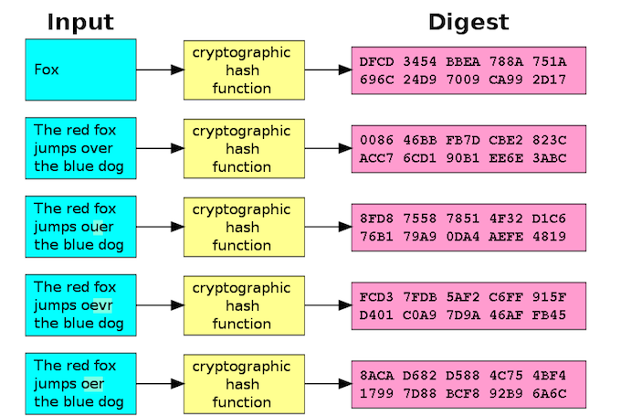

◉ Hash: o que são e como funcionam
Uma função de hash criptográfico, muitas vezes é conhecida simplesmente como hash – é um algoritmo matemático
que transforma qualquer bloco de dados em uma série de caracteres de comprimento
Uma função de hash criptográfico, muitas vezes é conhecida simplesmente como hash – é um algoritmo matemático
que transforma qualquer bloco de dados em uma série de caracteres de comprimento fixo. Independentemente do
comprimento dos dados de entrada, o mesmo tipo de hash de saída será sempre um valor hash do mesmo comprimento.
De acordo com o gerador online de hash, SHA-1 que foi encontrado na rede (SHA-1 é uma das funções de hash mais
utilizadas em computação, juntamente com MD5 e SHA-2), o hash para o meu nome, Brian, seria:
75c450c3f963befb912ee79f0b63e563652780f0. Acontece muito comigo das pessoas errarem meu nome e invés
de Brian me chama de “Brain” que em inglês significa “cérebro”. De fato, em minha carteira de motorista
oficial me chamo “Brain Donohue”, mas isso é outra história. O hash SHA-1 para “cérebro”, segundo o gerador
online de SHA-1 é: 8b9248a4e0b64bbccf82e7723a3734279bf9bbc4.
Como você pode ver, essas duas saídas são bastante diferentes, apesar do fato de que a diferença entre o
nome de Brian e Brain são apenas a ordem das vogais. Vamos fazer outra prova: se escrevo meu nome sem a
maiúscula, o gerador SHA-1 novamente me dá outro resultado diferente ou seja:
r760e7dab2836853c63805033e514668301fa9c47.
Você notará que todos os hashs são de 40 caracteres e surpreende ter um resultado deste tipo para uma palavra
de 5 letras como Brian, Brain. No entanto, o mais surpreendente, é que se inserimos cada palavra deste artigo
no gerador, vamos ter este hash: db8471259c92193d6072c51ce61dacfdda0ac3d7. Isso é cerca de 1.637 caracteres
(com espaços incluídos) condensados em uma produção de 40 caracteres, o mesmo comprimento que tivemos com o
meu nome de 5 letras. Você poderia fazer um hash SHA-1 das obras completas de William Shakespeare e ainda
acabar com um resultado de 40 caracteres. Além disso, nunca vamos ter 2 hash iguais.
Aqui está uma foto de cortesia da Wikimedia Commons, ilustrando o mesmo conceito para aqueles que preferem a
aprendizagem visual:

◉ Para quê serve os hash?
Boa pergunta. Infelizmente, a resposta é que os hash de criptografia são usados para uma série de coisas.
Para mim e para você, a forma mais comum de hashing tem a ver com senhas. Por exemplo, se você esquece sua
senha em algum serviço online, você provavelmente vai ter que executar uma redefinição de senha. Quando você
redefine sua senha, você geralmente não recebe sua senha de texto simples em troca. Isso porque o serviço
online não armazena sua senha em texto plano. Ele armazenam um valor de hash para a senha. Na verdade, esse
serviço (a menos que você esteja usando uma senha incrivelmente simples para que o valor de hash seja amplamente
reconhecido) não tem nenhuma ideia da sua senha real.
Para ser claro, se para restabelecer a senha você recebe a senha em texto simples, significa que o serviço
on-line não usa hash e isso é lamentável.
Você pode testar por você mesmo com um gerador de hash online. Se você gera um valor de hash para uma senha
fraca (como “123456”) e o digita em um gerador de hash inversa, é possível que o gerador reconheça o valor
de hash e revele a senha. No meu caso, o gerador de hash inversa reconheceu os hashes para “cérebro” e
“Brian”, mas não o hash que representa o corpo deste artigo. Assim que a integridade dos hash depende
inteiramente dos dados de entrada, que podem ser qualquer coisa.
Segundo um relatório da TechCrunch do final do mês passado, o serviço de armazenamento em nuvem, o Dropbox,
bloqueou um dos seus usuários porque ele compartilhava conteúdo protegido pela Digital Millennium Copyright
Act (DMCA), a lei estadunidense sobre os direitos do autor. Este usuário logo twittou que ele tinha sido
impedido de compartilhar determinado conteúdo. Em seguida as pessoas começaram a comentar a notícia na rede
social e muito gente ficou indignada dizendo que o Dropbox tinha acesso às contas dos usuários, apesar de
declarar o contrário na política de privacidade.
O Dropbox, é claro, não acessou os contepudos do usuário. Como observou o artigo TechCrunch, o que provavelmente
aconteceu aqui é que o detentor do copyright tornou seu arquivo protegido (talvez a composição digital de uma
música ou filme) e passou isso através de uma função hash. Eles, então, tomaram o valor de hash de saída e
acrescentou uma série de quarenta caracteres para algum tipo de lista ilegal para os hashes de materiais
protegidos por direitos autorais. Quando o usuário tentou compartilhar este material protegido por direitos
autorais, os scanners automatizados do Dropbox detectaram o hash e bloquearam o compartilhamento.
Assim, você pode criar hash para senhas e arquivos de mídia de forma clara, mas que outras funções tem a hash
criptográfica? Como já falamos, as funções de hash servem para muitos propósitos mais até do que eu sei. No
entanto, há mais um aplicativo de hashing que nos interessa: as empresas de produtos antivírus como a Kaspersky
Lab utilizam as funções hash criptográficas para detectar programas maliciosos.
Mais ou menos da mesma forma que os estúdios de cinema e gravadoras criam listas ilegais de hash para proteger
os direitos autorais, existe um monte de números de listas ilegais com hash de malware (a maioria das quais
estão disponíveis publicamente). Estas listas ilegais de hash de malwares – ou assinatura de malware – consistem
nos valores de hash de malware ou nos valores de hash de componentes menores e reconhecíveis de malware. Por um
lado, se um usuário encontra um arquivo suspeito, esse usuário pode digitar o seu valor de hash em um dos
muitos registros publicamente disponíveis de hash de malware ou bancos de dados, que vão informar ao usuário
se o arquivo é malicioso ou não. Por outro lado, um antivírus pode reconhecer e bloquear malware fazendo
uma comparação de arquivos de hashes para sua base de dados (e também públicas).
As funções de hash criptográficas também são usadas para garantir uma coisa chamada integridade da mensagem.
Em outras palavras, você pode garantir que alguma comunicação ou um arquivo não seja adulterado através de
uma examinação dos has criados antes e depois da transmissão de dados. Se os dois hash são idênticos, então
a transmissão é autêntica, significando que não houve adulteração.
◉ Como funciona a assinatura digital e como fazer
Nos últimos anos, o crescimento exponencial das relações comerciais online fez da assinatura digital uma
ferramenta básica para o dia a dia de pessoas físicas e jurídicas. A assinatura digital é utilizada em casos
específicos, como em alguns documentos governamentais - na emissão de Nota Fiscal Eletrônica (NF-e)
por exemplo.
Esse tipo de assinatura eletrônica, no entanto, ainda pode gerar algumas dúvidas. Neste post, apresentaremos
o que é uma assinatura digital, como funciona e como fazer uma. O que certamente levará você a outra pergunta:
“por que perdi tantos anos com a insegurança e a burocracia da assinatura manuscrita?” Confira!
◉ O que é assinatura digital?
A assinatura digital é um tipo de assinatura eletrônica específica, que usa um certificado digital
no padrão ICP-Brasil para proporcionar uma camada extra de autenticação da identidade de quem assina
o documento. Possui validade jurídica assim como a assinatura eletrônica simples.
As assinaturas digitais são baseadas na tecnologia chamada Public Key Infrastructure (PKI) ou Infraestrutura
de Chave Pública. Toda assinatura digital emprega um par de chaves: a chave privada, composta por um
conjunto de códigos criptografados de conhecimento exclusivo do subscritor, e uma chave pública,
derivada da anterior e usada para conferir a validade da assinatura.
Nesse contexto, as assinaturas digitais permitem que você assine seus documentos da mesma forma que as
manuscritas, sem a necessidade de reconhecimento em cartório.
Assinatura digital x Assinatura eletrônica
Uma assinatura eletrônica é uma categoria ampla, que envolve todas as formas de firma que usam meios
eletrônicos para ser validadas. Isso significa que, nesse enorme guarda-chuva da assinatura eletrônica,
estão embaixo a assinatura eletrônica simples, a assinatura digital, reconhecimento de IP, Token, biometria,
a tradicional chancela por login e senha (como no internet banking) ou outras formas de autenticação
eletrônicas como o uso de SSO.
A maioria dos documentos online podem ser assinados com o que a lei brasileira chama de assinatura eletrônica
simples, cuja criptografia (como é o caso da solução da Docusign) já assegura a identidade de quem assina.
Já a assinatura digital, por sua vez, é um tipo de assinatura eletrônica que usa especificamente um
certificado digital no padrão ICP-Brasil.
◉ Como a assinatura digital funciona?
Como vimos acima, a assinatura digital é formada por algoritmos que geram um par de chaves exclusivas e
interdependentes a cada nova assinatura (a chave pública, que pode ser divulgada livremente; e a chave privada,
de conhecimento exclusivo do emissor).
Uma chave apenas codifica o conteúdo e a outra apenas o decifra. Quaisquer das chaves podem cifrar ou decodificar,
mas cada chave só realiza uma dessas funções. Após a assinatura, uma sequência algorítmica é atrelada ao
documento, e qualquer mínima alteração “quebra” a autenticação.
Como as chaves são interdependentes, apenas com uma delas é possível decodificar o documento criptografado
pela outra. Essa tecnologia torna uma eventual adulteração algo próximo do impossível. É por causa desse
tipo de recurso que as assinaturas eletrônicas se tornaram uma referência em autenticidade, confiabilidade
e garantia de integridade das mensagens.
◉ O que diz a lei sobre a assinatura digital?
A validade jurídica da assinatura eletrônica (e por conseguinte, da digital) é assegurada há quase 20 anos.
A lei-base para essa regulamentação é a Medida Provisória 2.200/2001-2, que instituiu a Infra-Estrutura de
Chaves Públicas Brasileira — a ICP-Brasil. A MP 2.200-2/2001 cuidou também de estabelecer os conceitos de
assinatura eletrônica (art. 10, §2º) e de assinatura digital (art. 10, §1º), bem como seus requisitos de
validade;
Há ainda outras leis que fundamentam a legalidade das assinaturas eletrônicas, como por exemplo:
Lei 11.419/2006: essa Lei regulamenta a informatização do processo judicial e estabelece que os documentos
digitais assinados eletronicamente têm o mesmo valor jurídico que os documentos em papel;
Decreto 10.543/2020: regulamenta a Lei 14.063/2020, que estabelece um regime legal específico para o uso de
assinaturas eletrônicas em interações com entes públicos e em questões de saúde pública. A lei reclassifica
as assinaturas eletrônicas em 3 tipos, com clara inspiração no Regulamento (UE) 910/2014 do Parlamento Europeu
e do Conselho, que trata sobre identificação eletrônica e serviços de confiança para transações eletrônicas
no mercado interno europeu (Regulamento eIDAS).
Além dessas leis, é importante mencionar que a assinatura eletrônica também tem sua validade e eficácia
geralmente admitidas no Código Civil. O Código Civil estabelece que exceto nos casos específicos em que a
lei exigir, a validade da declaração de vontade das partes não dependerá de forma especial (art. 107). Nesse
mesmo sentido, a Lei 13.874/2019 acima descrita prevê que documentos particulares firmados por qualquer meio
de comprovação da autoria e integridade são válidos, desde que escolhido de comum acordo pelas partes ou
aceito pela pessoa a quem for oposto (art. 18).
◉ Quais as vantagens da assinatura digital?
A descrição do funcionamento desse modelo de autenticação já indica suas inúmeras vantagens em relação,
principalmente, à assinatura à caneta (manuscrita). Mas vale a pena pontuá-las diretamente:
segurança contra fraudes (a complexidade dos códigos matemáticos exclusivos gerados em cada assinatura garante
proteção absoluta aos seus documentos, além da certeza de que eles não serão interceptados por terceiros não
autorizados);
rapidez (contratos podem ser assinados em minutos, ainda que as partes interessadas estejam em áreas geográficas
distintas);
desnecessidade de impressões — se sua autenticação é digital, todo o processo de tramitação pode ser feito
eletronicamente, sem que seja preciso imprimir uma só folha de papel A4. Isso gera, principalmente, redução
de custos e maior celeridade na gestão de documentos;
armazenamento seguro, inclusive na nuvem — um contrato assinado manualmente pode ser extraviado, danificado ou
roubado. Como só existe um original, se ocorrer uma dessas fatalidades, todo o procedimento de elaboração,
coleta de assinaturas e autenticações oficiais deve ser refeito;
mobilidade — seus contratos, recibos e relatórios podem ser acessados de qualquer lugar com acesso à internet
(via smartphone, por exemplo).
◉ Onde é obrigatório usar assinatura digital?
Com a “migração” de quase todos os atos da vida para o ambiente digital, alguns órgãos e segmentos exigem a
assinatura digital para dar andamento às suas atividades. Os mais comuns são a declaração do Imposto de Renda,
licitações públicas e atos governamentais.
◉ Como fazer uma assinatura digital com o Docusign?
Se você precisa de uma assinatura digital ou deseja implementá-la em seu negócio, é importante saber como a
usar corretamente para obter os melhores resultados. Para isso, vamos ao passo a passo!
◉ Escolha uma Autoridade Certificadora
O primeiro passo é a escolha da Autoridade Certificadora, responsável por emitir o certificado que será usado
para gerar a assinatura digital. Para isso, analise os prós e contras, bem como seus respectivos valores e
diferenças.
Uma das principais formas de fazer isso é buscar reclamações em sites especializados. A partir disso, você
pode determinar quais realmente atendem às suas necessidades.
Adquira o melhor modelo de certificado para as suas necessidades
O segundo passo é ter um certificado digital. Há dois tipos no mercado:
A1 — armazenado direto no hardware, com validade de 1 ano, podendo ser usado para CPF;
A3 — armazenado em uma mídia criptográfica, que pode ser um cartão ou um token, com validade de 1 a 3 anos.
Há ainda as opções de Certificado Digital e-CPF e e-CNPJ, uma versão eletrônica dos respectivos documentos
que assegura a autenticidade e integridade das transações eletrônicas para pessoas físicas e jurídicas.
Além disso, graças à parceria entre a Docusign e a Safeweb, é possível que clientes possuidores de um certificado
digital SafeID possam assinar um documento utilizando seu certificado digital hospedado em nuvem.
Esse é um benefício adicional da Docusign, que permite que assinaturas sejam coletadas a partir do dispositivo
de preferência do signatário: tanto em computadores (com a utilização de certificados armazenados localmente
ou em hardware externo, como cartões ou pendrives) quando em dispositivos móveis (através da integração com
o SafeID, utilizando certificados digitais em nuvem).
◉ Crie uma conta na Docusign
Depois, é necessário criar uma conta na Docusign e escolher um dos planos para poder enviar envelopes (para
receber contratos para assinatura, no entanto, não é necessário ter um plano). Sua conta deve estar devidamente
configurada para ter acesso ao provedor de assinatura ICP-Brasil.
◉ Crie o documento
Depois de criar a conta, você pode criar envelopes de diversas maneiras. Você pode tanto criá-lo a partir:
– da página inicial (menu superior início), clicando em "Novo" e em seguida em "Enviar Documento"
– da página inicial, o usuário pode clicar no menu superior "Documentos" e em seguida em "Novo" e "Enviar
Documento"
◉ Adicione informações ao envelope
A criação de envelopes na plataforma Docusign está dividida em dois passos:
Adicionar informações ao envelope (documentos a serem assinados + signatários + assunto e corpo do e-mail de
notificação);
Adicionar tags aos documentos do envelope, ou seja, os campos que precisarão ser preenchidos com dados dos
signatários (nome, rubrica, assinatura, entre outros exemplos).
◉ Defina o tipo de assinatura necessária
Para informar os signatários, o usuário deve informar nome e e-mail para cada signatário. Na opção Mais, deve
clicar em "Selecionar tipo de assinatura" e, em seguida, selecionar "ICP Smart Card". Campos para CPF e cargo
serão habilitados, os quais podem ou não ser preenchidos. Além disso, o usuário pode definir uma ordem de
assinatura, se necessário.
Nota 1: Caso o CPF seja informado, o Agente de Assinatura filtrará os certificados por CPF no momento da
assinatura. Caso contrário, serão listados todos os certificados encontrados no computador do signatário.
Nota 2: Caso uma mesma pessoa precise assinar o mesmo documento com papéis diferentes, deve obrigatoriamente
ser informada em ordens diferentes.
Além dos documentos e dos signatários, o usuário pode definir o assunto e o corpo do e-mail que será enviado
para os signatários previamente informados.
◉ Envie o documento para assinatura
Depois de adicionar os signatários e campos de assinatura, envie o documento para assinatura. O documento pode
ser enviado por e-mail ou SMS, e os signatários receberão um link para acessar o documento.
Por padrão, as tags de Assinatura e de Rubrica exigirão que o signatário realize uma assinatura digital com
certificado ICP-Brasil - uma vez que a opção ICP Smart Card foi selecionada no passo anterior - no entanto,
estas tags podem ser configuradas como campos não-obrigatórios (opção “Campo obrigatório” disponível no lado
direito).
Após completar o documento, o usuário deve clicar em Enviar. Neste momento, os signatários receberão uma
notificação por e-mail alertando-os de que um novo envelope está disponível para sua assinatura. Vale
ressaltar que o envio da notificação obedecerá à ordem de assinatura informada nos passos anteriores.
◉ Assinatura
Quando os signatários clicam no link recebido, eles são levados para o Docusign eSignature, onde podem assinar
o documento utilizando seus certificados digitais. A Docusign ainda permite o uso de certificados digitais
mobile; via aplicativo SafeID em parceria com a empresa Safeweb.